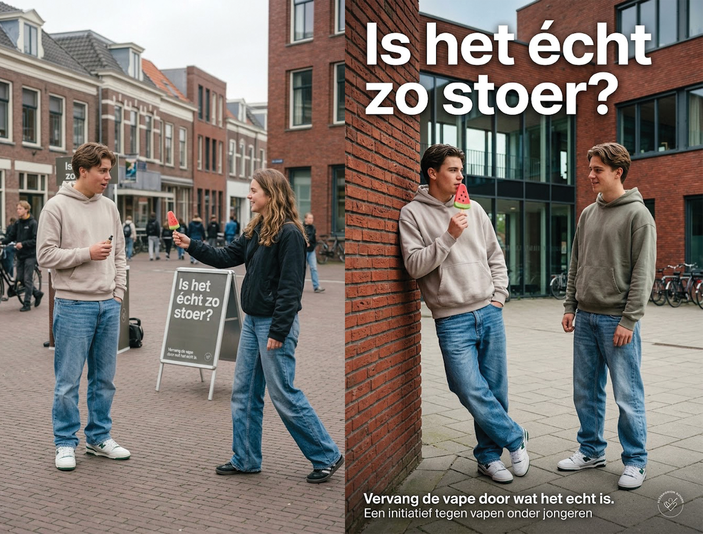
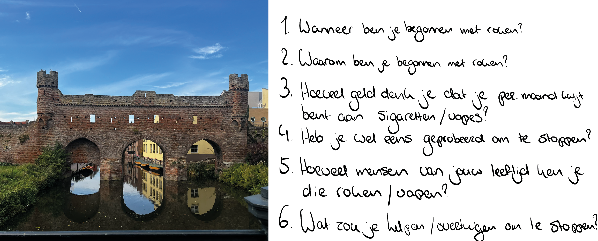
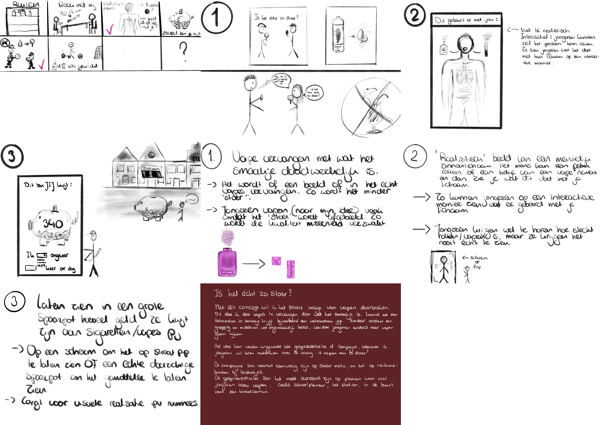
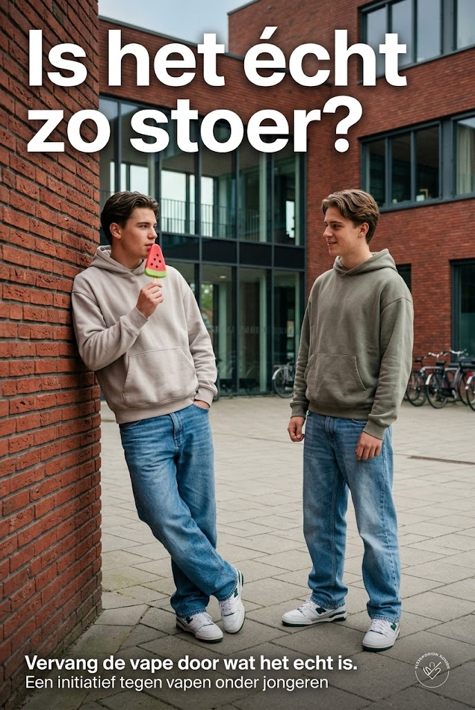
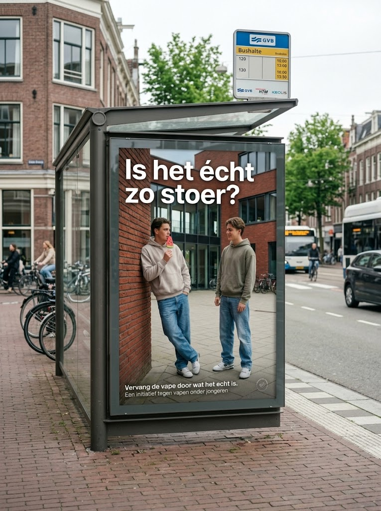
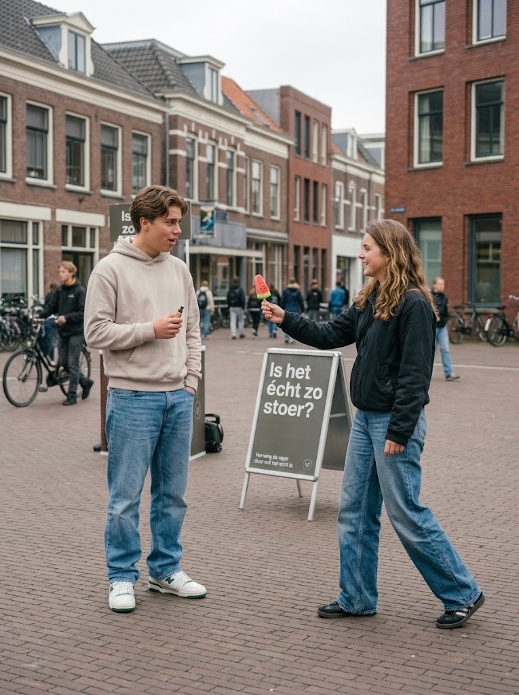

Is het écht zo stoer?
Conceptontwikkeling voor Muzus
Voor Muzus werkte ik aan een concept rondom het imago van vapen onder jongeren. Hierbij onderzocht ik hoe vapen vaak wordt gezien als iets stoers en hoe je jongeren op een andere manier naar dit beeld kunt laten kijken. Vanuit dit onderwerp ontwikkelde ik een concept dat jongeren op een speelse en confronterende manier aan het denken zet.

Waarom vinden jongeren vapen stoer?
Vapen heeft onder jongeren in korte tijd een modieus en rebels imago gekregen. Uit gesprekken en doelgroeponderzoek bleek dat sociale druk, het bij de groep willen horen en de smaakjes een grote rol spelen in hoe jongeren vapen ervaren.
De uitdaging voor Muzus was: hoe kun je jongeren bewust maken van hun eigen gedrag zonder met een belerend vingertje te wijzen? Het antwoord lag in het blootleggen van de tegenstrijdigheid tussen volwassen willen overkomen en de kinderlijke associaties die vapen eigenlijk oproept.

Zo ontstond mijn concept
Mijn creatieve proces begon met uitgebreide brainstorms, woordassociaties en visuele experimenten om tot de kern van het stoere imago door te dringen.

Is het écht zo stoer?
Mijn concept draait om het ter discussie stellen van het stoere imago van vapen.
Door een vape visueel te vervangen door een kleurrijke lolly ontstaat een opvallend contrast. Wat eerst stoer lijkt, krijgt ineens een andere uitstraling. Met deze onverwachte vergelijking wil ik jongeren laten nadenken over waarom vapen eigenlijk als stoer wordt gezien.


Van idee naar interactie

Mijn concept kan ook worden ingezet als gespreksstarter. Door jongeren twee verschillende beelden te laten zien, ontstaat ruimte voor een gesprek over het imago van vapen.
Tijdens een straatinterventie of schoolactie worden jongeren uitgenodigd om hun eerste reactie te geven. Doordat het beeld humor en zelfreflectie oproept in plaats van een verbod, ontstaat er een open en eerlijk gesprek tussen jongeren onderling.
Wat ik heb geleerd
Tijdens dit project voor Muzus heb ik ontdekt hoe krachtig een scherpe visuele metafoor kan zijn bij complexe maatschappelijke thema’s. In plaats van mensen te vertellen wat ze moeten denken, werkt een humoristische spiegel veel effectiever om een dialoog op gang te brengen.
Het proces van doelgroeponderzoek tot en met de uiteindelijke campagnemiddelen heeft me geleerd om concepten durven te versimpelen tot de meest kernachtige, rake boodschap.